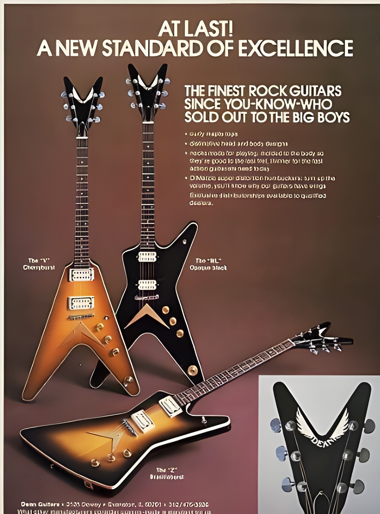

Dean Guitars
Dean Guitars - американська компанія, виробник музичних інструментів. Найбільш відома як виробник електрогітар, але також
виробляє акустичні гітари, електричні та акустичні бас- гітари, підсилювачі, джазові гітари, банджо і мандоліни.
З 2007 року компанія почала виробництво звукознімачів для електрогітар під маркою DMT (Dean Magnetic Technologies),
які повністю виготовляються в США.
Компанія Dean Guitars була створена в 1976 році Діном Зелінським (англ. Dean Zelinsky), який почав робити гітари ще в ранньому віці. Зелінський порахував, що створення дизайнів рок-гітар перейшло в стадію застою і вирішив зробити все, що в його силах, щоб це змінити. Перші ж гітари Dean, випущені в середині 1970-х, стали швидко набирати популярність саме через свого дизайну, а також через те, що їх конструкція ґрунтувалася на поліпшенні сустейна. Фірмовим знаком гітар Dean стала V-подібна головка грифа (вона раніше використовувалася компанією Gibson на прототипах гітар Explorer і Flying V, але в масштабне виробництво не пішла у зв'язку з тим, що для компанії це був занадто радикальний перехід).
У 1986 році Зелінський продав компанію, вирішивши більше присвячувати часу сім'ї, а не робити гітари. Він пояснював своє рішення величезною популярністю гітар типу «суперстрат», які він глузливо називав «Floyd Rose'ом з гітарою, приробленою до нього». Наприкінці 1990-х компанія Armadillo Enterprises відродила цей бренд, що пізніше стало причиною повернення Зелінські як виконавчого і креативного директора.
Після вбивства Даймбега Даррелла, Дін працює з його сім'єю і друзями в справі створення меморіального фонду. Модель Razorback з'явилася завдяки спільній роботі Даррелла з Зелінським. Кілька видозмінених моделей популярного стилю ML були випущені як Триб'ют Моделі.
У 2008 році Зелінський через внутрішні розбіжності пішов з компанії і заснував власний гітарний бізнес. В даний час Dean Guitars раніше випускає модельний ряд інструментів Зелінського, проте в 2010 році вже з'явилося кілька власних розробок компанії і продовжився випуск класичних моделей електрогітар — копій Stratocaster і Telecaster.
